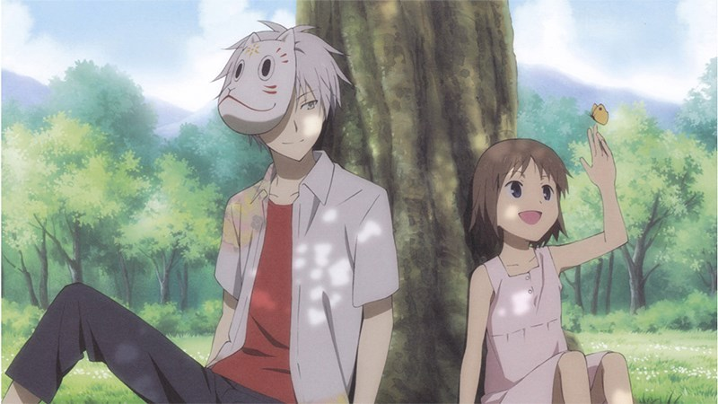
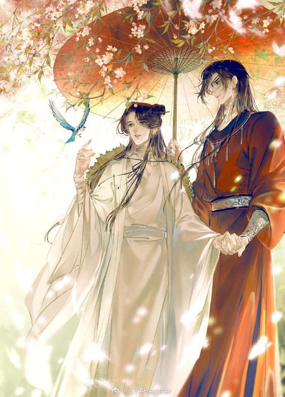

Giới thiệu về anime
Anime là phim hoạt hình được làm theo phong cách Nhật Bản. Nội dung của Anime rất đa dạng phong phú cho mọi đối tượng và mọi lứa tuổi. Hiện nay các anime hot thường là các anime được chuyển thể từ các tác phẩm truyện tranh nổi tiếng. Anime trước đây chỉ phổ biến ở Nhật Bản nhưng sau này nó được ưa chuộng trên toàn thế giới.
-

Anime
Hiện nay, Anime chiếm 60% số lượng phim hoạt hình được sản xuất trên thế giới. Những bộ anime được chiếu trên TV thường được phát theo mùa và có tên gọi là TV series.
-

Manga
Manga xuất hiện rất sớm ở Nhật vì người Nhật đặc biệt có hứng thú với các loại nghệ thuật về tranh ảnh (Manga). Thời kỳ đầu Manga là những bản truyện tranh ngắn, nhưng không thể phủ nhận giá trị của nó, có thể nói Manga thời kỳ đầu của người Nhật giống như những câu chuyện ngụ ngôn của Việt Nam, đều mang lại những giá trị văn hoá rất lớn.
-
Light Novel
(ライトノベル raito noberu) là một dòng tiểu thuyết Nhật Bản vốn nhằm vào giới độc giả là các học sinh trung học cơ sở hay trung học phổ thông và thường đi kèm những hình ảnh minh họa theo phong cách manga & anime.
o(*￣▽￣*)ブNếu mọi người có sở thích với anime và manga
Mọi người có thể ghé qua trang này để tìm hiểu thêm một số thể loại anime và manga phù hợp với sở thích của mình.
Một số thể loại manga, anime
- Romance
- Comedy
- Horror
- Sport
- Mecha
- Fantasy
About EveryThing Anime
Otaku (Nhật: おたく/ オタク?) Những bộ anime chỉ một kiểu người, kì quái (tiếng Anh: geek), làm bạn những người giống như họ hoặc dùng để chỉ một ai đó quá say mê (mọt) một cái gì, đặc biệt là anime (hoạt hình), manga (truyện tranh), hay game (trò chơi điện tử).